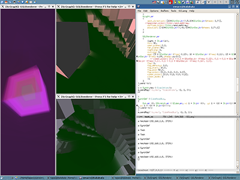
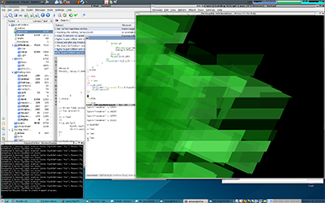
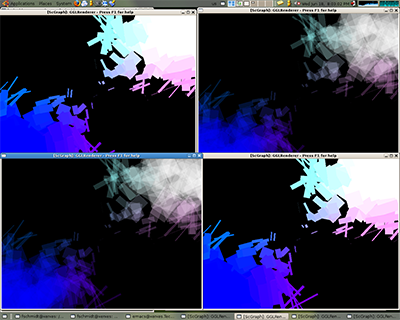
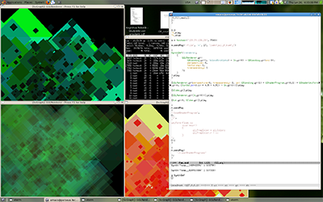

ScGraph A 3D graphics server for SuperCollider
2007, 2008 Florian Schmidt (originally implemented at Bielefeld University)
In May 2007 i completed my studies of Computer Science (naturwissenschaftliche Informatik) at the Neuroinformatics group of the Faculty of Technology of the University of Bielefeld by handing in my diploma thesis. The subject of the thesis was “Design and Implementation of a 3D Graphics Server”. I was tutored by Till Bovermann, Thomas Hermann und Helge Ritter. In the course of the thesis i have developed ScGraph (short for “SuperCollider Graphics Server”).
Introduction:
The main idea was to apply the SuperCollider Server/Client architecture and usage paradigm to the domain of 3D graphics. Simply put (for those familiar with SuperCollider):
Instead of
{SinOsc.ar}.play
we wanted to be able to do:
{GCube.gr}.play
To achieve this, create a Graphics Server Representation:
(
g = Server(\graphics, NetAddr("localhost", 37291));
g.boot;
)
As a means to spawn a synth that outputs a 3D representation of a Cube (”gr” here means “graphics rate”). To reduce the implementation effort we decided to reuse the existing SynthDef (and related) classes. The SynthDef format and the OSC protocol of the graphics server is mainly unchanged from the original SuperCollider framework. In the graphics server graphics processing takes the place of audio rate processing, but keeping control rate processing.
Actually, our example was a bit more involved:
(
SynthDef (\WobblingCube, {
var source;
source = GCube.gr(size: SinOsc.kr(freq: 0.5));
Out.gr(source);
}).play(target: g);
)
This example shows that the original SuperCollider control rate units are still usable (SinOsc.kr creates a control rate instance of the SinOsc unit). A cube is produced that changes its size periodically with a frequency of 0.5Hz.
Actually above example wouldn’t produce anything visible yet. One major difference between ScGraph and ScSynth (the SuperCollider audio synthesis server) is that graphics buses, contrary to audio buses, are not connected to the equivalent of a soundcard. To see anything a special unit needs to be created: GGLRenderer. Here’s a more complete example that actually produces a window on the screen with some animated graphics.
(
SynthDef (\WobblingCube, {
var source;
source = GCube.gr(size: SinOsc.kr(freq: 0.5));
GGLRenderer.gr(source);
}).play(target: g);
)
Central Data Structures
renderer
texture, etc
GColor (note that there is also the convenience instance-method Color:gr)
positioning
graphics primitives 2d
graphics primitives 3d
graphics bus access
In
Out
ReplaceOut
Features:
- Should build on Linux as well as Mac OS X (the mac port still has some issues)
- SuperCollider OSC protocol (partly implemented)
- SuperCollider SynthDef format
- SuperCollider plugin loading to make use of control rate units
- Support for geometry producing/consuming units (GUnits)
- OpenGL rendering (although different renderers should in practice be possible to implement)
- Lighting
- Blending
- Textures (preliminary, hack’ish)
TODO’s:
- Optimization (too many copies are made at the moment due to the flexible routing possibilities)
- Completion of SC-OSC protocoll (there are some commands still missing)
- Buffer support
- Improve texture support (via Buffers maybe?)
- Extend SynthDef format to support strings, geometry, etc.
- Fix up the GServer/GServerOptions classes
Patches welcome.
Screenshots:
What’s a program overview without screenshots? So here we go:




License:
ScGraph uses the GNU General public license (GPL) version 2.
Downloads:
NEW releases can be found at the sourceforge.net project page: http://sf.net/projects/scgraph
You can find OLD release tarballs of ScGraph at http://tapas.affenbande.org/scgraph/
SVN:
SVN access is possible through the sourceforge.net site.
Requirements:
- A pretty recent SuperCollider installation including the development files (see scons -h in the SuperCollider source for how to do this)
- Qt4
- GraphicsMagick++
- OSCPack
- Boost libraries
- Jack/FFTW3 (only needed for the FFT unit FreqAmp)
Installation:
See the included INSTALL file for installation instructions.
Documentation
Use the source, Luke ;) Simply have a look into the $(PREFIX)/share/scgraph/sclang directory to see what classes are available.